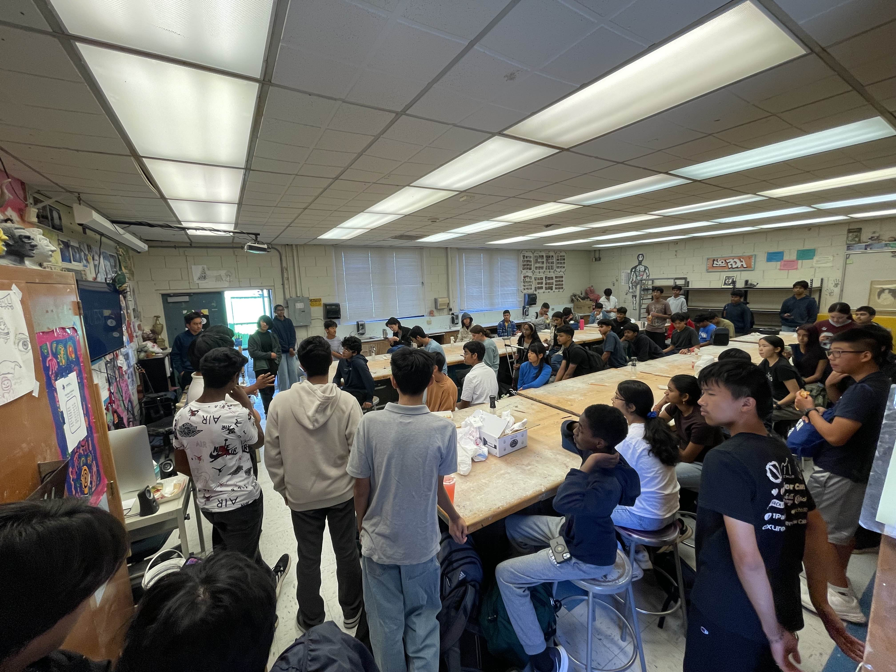

Project Snapshot
Status
Prototype v2
Build Window
Sep 2025 - Mar 2026
Focus
Robotics + Power Systems
Gallery


Build Process
Challenge: Extend run-time without increasing overall rover weight.
Approach: Shifted to a lighter chassis, higher-efficiency motors, and tuned PWM behavior for flatter draw.
Iterations: Reworked wheel geometry after early drift and slipping during incline tests.
Outcome: Improved stability and longer test sessions across mixed surfaces.
Tools Used
- Fusion 360 for CAD
- Arduino Nano and motor drivers
- PLA printed drivetrain prototypes
- Python notebook for telemetry checks
Next Steps
Integrate navigation waypoints and add a lightweight weatherproof shell for field events.